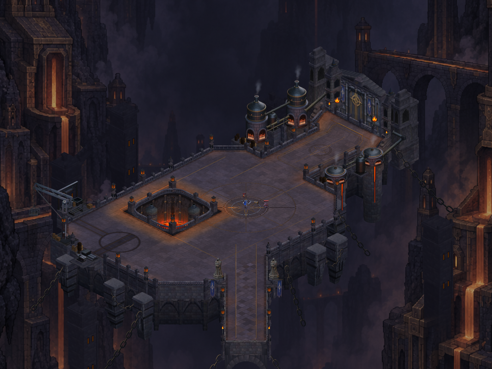
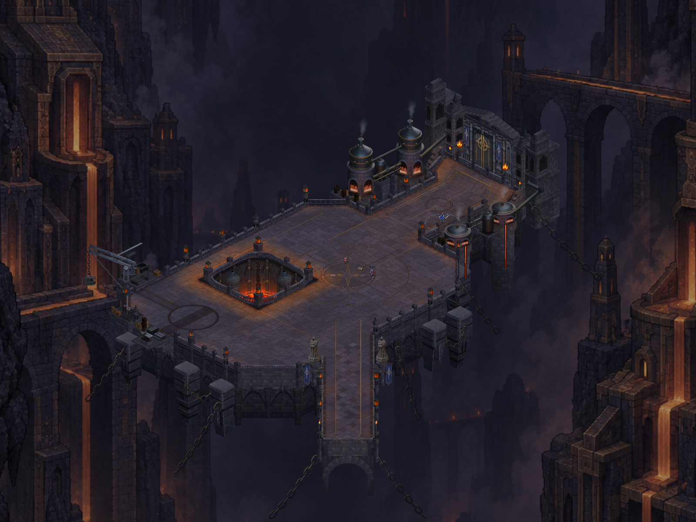
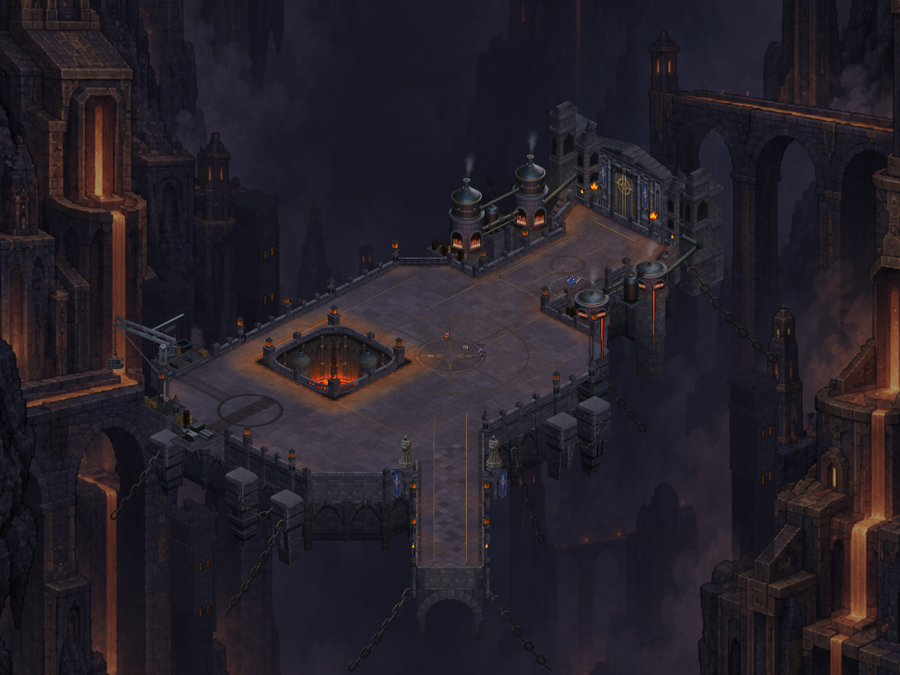
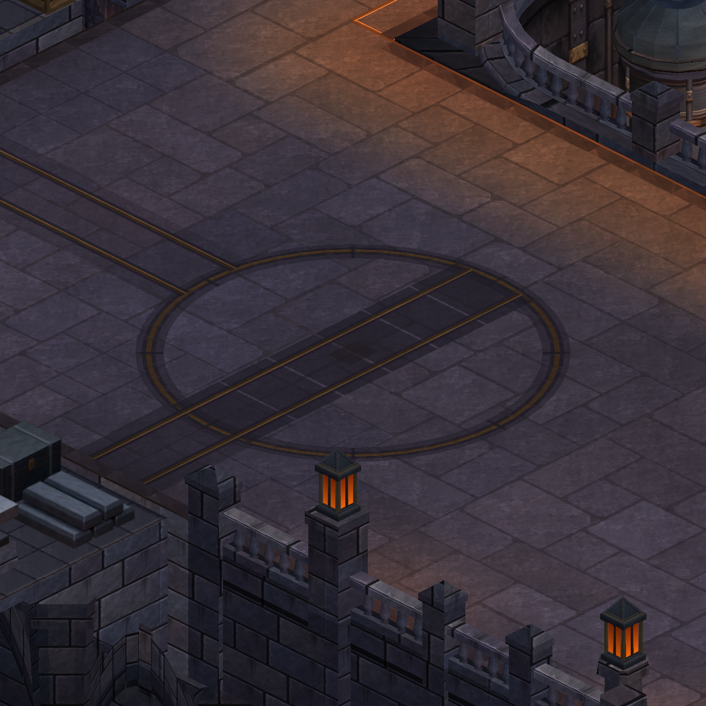
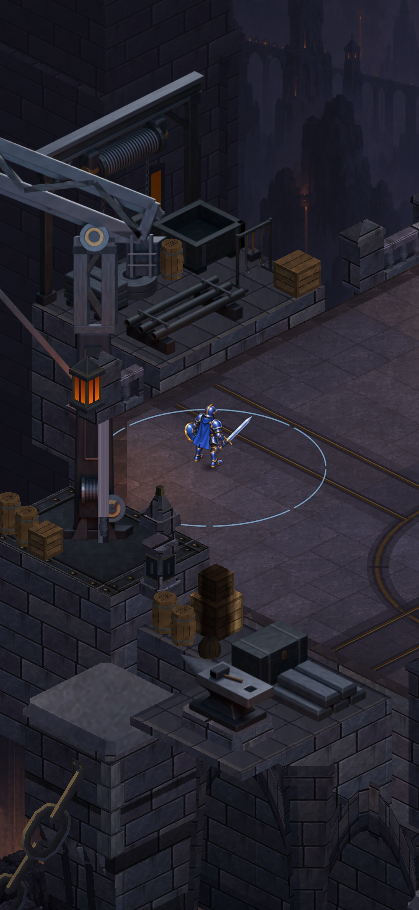
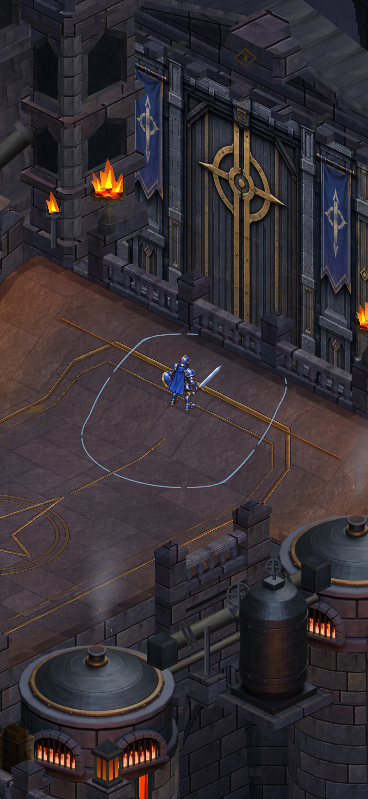

CRYPTFORGE · ACTUAL UNITY CAPTURES
Distant foundry works
Smaller industrial towers and a broken service bridge add depth around the playable court. Quieter stone joints keep the floor from dominating the composition.
Verified: 1,007 tests passed, Android APK ready, actual Unity image review accepted. Device installation/review pending.

After · actual Unity capture.
Whole-map composition

Before · complete map.
After · surrounding industrial depth.Working-yard paving

Before · broad mortar network.After · narrower setbacks and quieter mortar.Portrait review
Matched production camera width, staged actor and hidden HUD. These are Unity renders, not phone screenshots.

West yard.
Gate approach.Evidence and limits · Complete map image · Before counts · After counts